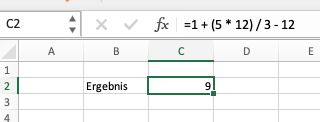
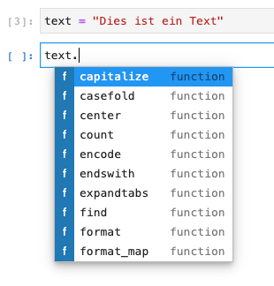
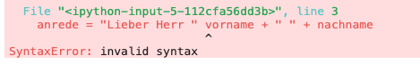

1 + (5 * 12) / 3 - 129.0Es ist nicht möglich, Ihnen im Rahmen dieses Kurses alle Details der Programmierung (in Python) beizubringen. Jedoch werden Sie im Rahmen dieses Kurses bereits die wesentlichen und grundlegende Konzepte der Programmierung kennenlernen. Jedoch haben wir uns dazu entschlossen, Ihnen diese Konzepte nicht isoliert vom Inhalt des Kurses zu präsentieren, sondern diese stattdessen an geeigneter Stelle (“on the fly”) in den einzelnen Kapiteln einzubauen. Dies hat den Vorteil, dass Sie das (teilweise sehr abstrakte) Programmierkonzept direkt mit einer konkreten Anwendung verbinden. Aus unserer Sicht hält das die Motivation hoch und macht das Erlernen der Programmierung für die Zwecke der Datenanalyse leichter.
Dennoch ist es notwendig, dass Sie einige minimale Grundlagen der Programmierung kennen, bevor wir der Datenanalyse beginnen. In diesem Kapitel werden wir diese minimalen Grundlagen vorstellen.
Beginnen wir mit einfachen mathematischen Operationen. Das Beispiel zeigt einen Ausdruck bzw. Statement (im Folgenden verwenden wir den Begriff Statement) mit Berechnungen. Dieser Ausdruck ist in Python geschrieben:
1 + (5 * 12) / 3 - 129.0Das Ergebnis - wenn man die Zelle mit STRG + ENTER ausführt - wird unterhalb der Zelle angezeigt und beträgt 9.
Wie man sieht, kann man - analog zu einem Taschenrechner (oder Excel) - die bekannten arithmetischen Operatoren in Python verwenden.
+ = Addition
- = Subtraktion
* = Multiplikation
/ = Division
** = Potenzieren (❗ die Schreibweise für \(3^4\) in Python lautet \(3{**}4\))
Wir werden diese Operatoren im Laufe dieses Kurses immer wieder verwenden. Jedoch nicht wie im obigen Beispiel dargestellt. Dieses Vorgehen ist nämlich meist nicht sinnvoll und wenig vorteilhaft gegenüber z.B. einem Taschenrechner. Auch in einem typischen Tabellenkalkulationsprogramm wie Excel würden wir anders vorgehen, da wird dort typischerweise nicht eine komplette Formel mit fest codierten Werten in eine Zelle schreiben. Dies ist umständlich, wenig flexibel und fehleranfällig. Gleiches gilt für Python.

In Excel würden wir stattdessen die Werte auf verschiedene Zellen aufteilen und in einer Ergebniszelle verknüpfen. Dieses Vorgehen hat den Vorteil, dass die Annahmen für das Ergebnis viel transparenter und Änderungen in Annahmen auf einen Blick ersichtlich sind. So wird z.B. deutlich, dass es sich bei der \(12\), die in der Berechnung zwei Mal vorkommt (Zellen C5 und C7) um tatsächlich zwei verschiedene Annahmen handelt - sonst würden wir nicht zwei Inputparameter benötigen -, die nur zufällig den selben Wert haben.

In Python können wir das gleiche Vorgehen verwenden. Wir können die Werte in Variablen speichern und dann die Berechnung in einer weiteren Variablen durchführen.
In Python kann man Variablen wie Platzhalter für Werte verwenden. Man kann einer Variablen einen Wert zuweisen, indem man den Variablennamen schreibt, gefolgt von dem Zuweisungsoperator = und dem Wert, den man der Variablen zuweisen möchte. Wir schreiben also
<variable> = <wert>Zum Beispiel:
zahl1 = 42
zahl2 = 3.2
satz = "Deutscher Meister wird nur der BVB"Namen für Variablen sollten sinnvoll und prägnant (d.h. nicht zu lang) sein. In Python gibt es darüber hinaus die Konvention (siehe PEP 8), dass Variablen klein geschrieben werden und mehrere Wörter mit “_” getrennt werden.
Beispiel:
liste_zahlen = [1, 2, 3, 4, 5]
anzahl_elemente = 5Diese Konvention ist für die Funktion eines Programms nicht entscheiden, jedoch erleichtert diese die Lesbarkeit des Codes.
Wir können nun das Konzept der Variablenzuweisung verwenden, um Berechnungen durchzuführen.
cash_flow = 100
zinssatz = 0.05
kapitalwert = cash_flow / (1 + zinssatz)
kapitalwert95.23809523809524Natürlich benötigen wir diese Art der Berechnungen keine Programmierkenntnisse, sondern könnten diese am Taschenrechner oder in Excel durchführen (in diesem Falle vermutlich die bessere Idee). Jedoch können wir das Grundkonzept der Variablenzuweisung auch für wesentlich komplexere Probleme oder Fragestellungen anwenden, bei denen ein Taschenrechner oder auch Excel nicht mehr geeignet wären. Was meinen wir mit komplex? Zum einen ist es Python egal, was wir in einer Variablen speichern. Wir können also auch ganz andere Dinge in Variablen speichern und dann mit diesen weiterarbeiten. So können wir z.B. große Datenmengen (z.B. ein Excelsheet oder eine Datenbank) einer Variabel zuweisen und dann mit dieser weiterarbieten (siehe unten). Zum anderen werden wir auch weitere Grundkonzepte kennenlernen, die es uns ermöglichen, mit Variablen zu arbeiten (z.B. könnnen wir Bedingungen anlegen, die abhängig von den Werten in Variablen sind).
In der untenstehenden Zelle wird eine Exceltabelle in eine Variable tabelle gespeichert. Wir können mit dieser Variable dann weiterarbeiten und z.B. die Daten in der Tabelle auswerten, neue Daten hinzufügen oder die Tabelle in eine andere Datei exportieren.
import pandas as pd
datei_pfad = "../../_data/sales.xlsx"
tabelle = pd.read_excel(datei_pfad)
tabelle| Produkt | Preis | Menge | Datum | |
|---|---|---|---|---|
| 0 | Apple | 0.79 | 10 | 2022-01-01 |
| 1 | Orange | 1.99 | 1 | 2022-01-02 |
| 2 | Orange | 1.99 | 5 | 2022-01-03 |
| 3 | Banana | 0.79 | 1 | 2022-01-04 |
| 4 | Apple | 0.79 | 7 | 2022-01-05 |
| 5 | Orange | 1.99 | 2 | 2022-01-06 |
| 6 | Banana | 0.79 | 9 | 2022-01-07 |
| 7 | Apple | 1.99 | 4 | 2022-01-08 |
| 8 | Apple | 2.49 | 8 | 2022-01-09 |
| 9 | Orange | 2.49 | 7 | 2022-01-010 |
Unser vorheriges Beispiel zeigt, dass Variablen ganz unterschiedliche Inhalte haben können. Wir haben Zahlen, einen Text und eine Tabelle in Variablen gespeichert. Wir sprechen in diesem Fall davon, dass eine Variable einen bestimmten Datentyp hat. In der untenstehenden Tabelle (Tabelle 6.1) sind die Datentypen unserer Variablen aufgelistet.
| Datentyp | Beispiel | Beschreibung |
|---|---|---|
int |
42 |
Ganze Zahl |
float |
3.2 |
Gleitkommazahl |
str |
"Deutscher Meister wird nur der BVB" |
Text |
DataFrame1 |
tabelle |
Tabelle |
1 Konkret: pd.DataFrame
Wir können den Typ einer Variablen mit dem Befehl type() herausfinden.
Wir können also z.B. den Typ der Variablen zahl1 mit dem Befehl type(zahl1) herausfinden.
type(zahl1)intDen Typ der Daten können wir meist nicht am Namen der Variablen erkennen. Außerdem ist es so, dass wir den Datentyp einer Variabel verändern können, in dem wir ihr einen neuen Wert zuweisen.
zahl1 = 0.12
type(zahl1)floatIm obigen Beispiel haben wir der Variablen zahl1 einen neuen Wert zugewiesen. Dieser Wert ist eine Gleitkommazahl. Dadurch hat sich der Datentyp der Variablen von int zu float geändert.
Der Typ der Variable hängt also von den Werten ab, den wir ihr zuweisen.
Nun mögen wir uns fragen, warum wir uns überhaupt mit dem Datentyp einer Variablen beschäftigen müssen. Der Datentyp einer Variable ist wichtig, da dieser bestimmt, welche Fähigkeiten2 eine Variable hat.
2 Wir verwende bewusst den untechnischen Begriff der Fähigkeit, um zu verdeutlichen, was die jeweilige Variable kann. Wir müssen an dieser Stelle keine technischen Begriffe verwenden.
Prinzipiell ist es aus zwei Gründen wichtig, die Fähigkeiten einer Variable zu kennen:
Wir sollten die Fähigkeiten einer Variable kennen, um Fehler zu vermeiden.
Wir können die Fähigkeiten einer Variable nutzen, um unsere Aufgaben zu lösen.
Lassen Sie uns zwei Beispiele betrachten, die zeigen, wie wir die Fähigkeiten einer Variable nutzen können.
Wir haben bereits kennengelernt, dass wir mit Variablen einfache Rechnungen durchführen können. Wir können z.B. zwei Variablen addieren, indem wir die beiden Variablen mit dem +-Zeichen verknüpfen.
zahl1 = 2
zahl2 = 3
zahl1 + zahl25Diese Rechnung funktioniert, da die beiden Variablen zahl1 und zahl2 beide Zahlen sind. Was passiert jedoch, wenn wir zwei Variablen addieren, die keine Zahlen, sondern z.B. Texte sind?
text1 = "12"
text2 = "3"
text1 + text2'123'Zu unserer Überraschung erhalten wir als Ergebnis nicht die Zahl 15, sondern den Text 123. Dies ist problematisch, da wir bei der Berechnung eigentlich eines von zwei Ergebnissen erwarten würden: (i) eine Fehlermeldung, da wir zwei Texte addieren wollen, oder (ii) das korrekte Ergebnis 15. Das Ergebnis 123 ist jedoch nicht das, was wir erwarten würden.
Das Beispiel ist natürlich sehr simpel und konstruiert. In der Praxis werden wir jedoch häufiger mit solchen Fehlern konfrontiert, bei denen wir Fähigkeiten auf Datentypen anwenden, die anders sind als die Fähigkeiten, die wir eigentlich anwenden wollen. Wir sollten uns also immer bewusst sein, welche Fähigkeiten eine Variable hat und diese Fähigkeiten nutzen, um Fehler zu vermeiden.
Lassen Sie uns das vorherige Beispiel aufgreifen. Wir haben gesehen, dass wir Variablen vom Datentype str nicht im mathematischen Sinne addieren können. Wieso hat das Programm dann aber keinen Fehler ausgeworfen. Der Grund hierfür ist, dass wir die Operation + nicht für mathematische Berechnungen nutzen sollten, sondern für das Zusammenfügen von Texten. Wenn wir dies wissen, können wir uns diese Fähigkeit zu Nutze machen.
vorname = "Max"
nachname = "Mustermann"
anrede = "Lieber Herr " + vorname + " " + nachname
anrede'Lieber Herr Max Mustermann'Auch dies ist natürlich nur ein sehr simples Beispiel, um zu verdeutlichen, dass jede Datentyp unterschiedliche Fähigkeiten hat und wir diese nutzen, um unsere Aufgabenstellung zu lösen.
Wie stelle ich nun aber fest, welche Fähigkeiten eine Variable hat? Hier für gibt es verschiedene Wege:
help()-Funktion nutzen, um uns die Dokumentation zu einem Datentyp anzeigen zu lassen.help(str) # Hilfe für den Datentyp strdir()-Funktion nutzen, um uns die Methoden eines Datentyps anzeigen zu lassen.dir(str) # Fähigkeiten für den Datentyp strTAB-Vervollständigung die Fähigkeiten einer Variable anzeigen lassen.
3 Was das genau ist, wir in Sektion [TODO] erläutert
Im Zuge Ihrer Arbeit mit Python werden Sie immer wieder Fehlermeldungen erhalten. Diese Fehlermeldungen sind Fluch und Segen zugleich. Was sind Fehlermeldungen und warum sind diese so wichtig? Fehlermeldungen sind eine Art Feedback (in diesem Fall von Python), das uns mitteilt, dass etwas nicht funktioniert.
Gerade als Anfänger können Fehlermeldungen sehr frustrierend sein. Schließlich weisen diese uns daraufhin, dass der Code, den wir geschrieben haben, nicht funktioniert. Machen Sie jedoch nicht den Fehler zu glaubne, dass Fehlermeldungen nur von Anfängern produziert werden. Auch erfahrene Programmierer stolpern quasi täglich über Fehlermeldungen. Der Unterschied zwischen erfahrenen Programmierern und absoluten Anfängern ist jedoch, dass letztere die Fehlermeldungen meist verwirrend und unverständlich finden und dieses deshalb nicht für sich zu nutzen wissen.
Fehlermeldungen geben uns nämlich wertvolle Hinweise darauf, was genau nicht funktioniert. Wir sollten uns also immer die Zeit nehmen, Fehlermeldungen zu lesen und zu verstehen. Oft werden wir dananch feststellen, dass der Fehler nicht in der Logik unseres Codes liegt, sondern in der Syntax (d.h. wir haben z.B. einen Tipfehler gemacht) und wir diesen schnell beheben können.
Lassen Sie uns ein Beispiel betrachten, bei dem wir eine Fehlermeldung erhalten.
vorname = "Max"
nachname = "Mustermann"
anrede = "Lieber Herr " vorname + " " + nachname
anrede
Die rote Fehlermeldung weißt zunächst darauf hin, dass unser Code so nicht funktioniert. Wir sollten also zunächst versuchen, den Fehler zu finden. Die Fehlermeldung hilft uns dabei. Wir sollten dabei immer zunächst auf die letzte Zeile der Fehlermeldung schauen. Dort wird uns mitgeteilt, um welche Art des Fehlers es sich handelt. In unserem Fall handelt es sich um einen SyntaxError, d.h. wir haben dem Computer einen Befehl geben, den er nicht versteht bzw. kennt. Dies passiert häufig, wenn wir einen Tippfehler gemacht haben. Sobald wir dies wissen, müssen wir uns nur noch den Code finden, in dem der Fehler gemacht wurde. Auch hier hilft uns die Fehlermeldung, da Sie zum einen die Zeile des Codes darstellt, in der der Fehler aufgetreten ist und zum anderen mit dem ^-Symbol auf die Stelle im Code hinweist, der falsch ist. In unserem Fall ist der Fehler demnach, dass wir die Zeichenkette "Lieber Herr " nicht mit einem + an die Variable vorname anhängen.
wir können nun den Fehler beheben und den Code erneut ausführen.
vorname = "Max"
nachname = "Mustermann"
anrede = "Lieber Herr " + vorname + " " + nachname
anrede'Lieber Herr Max Mustermann'Es gibt viele verschiedene Fehlermeldungen - einigen von Ihnen werden Sie in diesem Kurs produzieren - die teilweise auch komplexer sind bzw. schwerer zu beheben sind. Wir können (und wollen) an dieser Stelle nicht auf alle verschiedenen Fehler eingehen. Uns geht es darum, dass Sie sich durch Fehlermeldungen nicht abschrecken lassen und diese als Hilfsmittel nutzen, um Ihren Code zu verbessern. In der untenstehenden Tabelle (Tabelle 6.2) finden Sie eine Auswahl an häufigen Fehlermeldungen.
| Fehlermeldung | Beschreibung der Art des Fehlers | kurzes Beispiel |
|---|---|---|
| SyntaxError: EOL while scanning string literal | Fehler bei der Syntax, in dem ein String nicht richtig abgeschlossen wurde. | “Max Muster |
| NameError: name ‘y’ is not defined | Fehler bei der Verwendung einer Variable, die nicht definiert wurde. | x = y + 2 |
| TypeError: unsupported operand type(s) for +: ‘int’ and ‘str’ | Fehler beim Verwenden eines Operators mit ungültigen Typen. | 2 + “Text” |
| IndexError: list index out of range | Fehler beim Zugriff auf ein Element einer Liste, das nicht existiert. | meine_liste[5] |
| KeyError: ‘key’ | Fehler beim Zugriff auf einen Schlüssel in einem Dictionary, der nicht existiert. | mein_dictionary[‘alter’] |
Wir haben in diesem Kapitel von Fähigkeiten gesprochen, die wir nutzen, um unsere Analysen durchzuführen. Lassen Sie uns an dieser Stelle ein Geheimnis lüften: Python bzw. die zur Verfügung stehenden Datentypen haben in Summe kaum die Fähigkeiten, die wir für unsere Analysen benötigen.
Dies mag zunächst überraschen ist jedoch vor dem Hintergrund, dass Python ursprünglich nicht für die Analyse von Daten entwickelt wurde, zu verstehen. Eine Standardinstallation von Python enthält nur die Grundfähigkeiten, von denen wir bereits einige kennengelernt haben. Mit Fähigkeiten meinen wir an dieser Stelle
die Datentypen, die Python zur Verfügung stellt und
die Funktionen, die wir auf diesen Datentypen anwenden können und
Wir haben bereits einige Datentypen kennengelernt, die Python zur Verfügung stellt. Diese sind z.B. int, float, str, list und dict. Auch haben wir einige Funktionen kennengelernt, die wir auf diesen Datentypen anwenden können. Diese sind z.B. print(), dir() und help(). Eine Liste der verfügbaren Funktionen finden Sie in der Python-Dokumentation.
Mit der Summe der verfügbaren Datentypen und Funktionen können wir theoretisch alle Analysen durchführen, die wir uns vorstellen können. Dies ist jedoch sehr aufwendig und würde viel Zeit in Anspruch nehmen. Wir müssten nämlich alle Funktionen, die wir im Rahmen eine Datenanalyse (d.h. der Erstellung von Diagrammen, der Berechnung von Kennzahlen, der Erstellung von Statistiken, etc.) benötigen, selbst schreiben. Dies ist nicht nur sehr aufwendig, sondern auch sehr fehleranfällig.
Glücklicherweise gibt es jedoch eine Vielzahl an Modulen und Bibliotheken, die wir nutzen können, um die Fähigkeiten von Python zu erweitern. Diese Module und Bibliotheken sind bereits für uns geschrieben und müssen nur noch importiert werden. Wir werden in diesem Kurs einige Module und Bibliotheken kennenlernen, die wir nutzen können, um unsere Analysen durchzuführen.
Wir können uns die zusätzlichen Fähigkeiten, die wir über den Import von Modulen und Bibliotheken erhalten, als eine Art “Erweiterung” von Python vorstellen - vergleichbar zu Add-ons in Excel. Da es sich bei Python um eine sogenannte Open-Source Sprache handelt, können die benötigten Erweiterungen im Internet eingesehen und kostenlos heruntergeladen werden.
Wir können diese Erweiterungen nutzen, in dem wir zwei Schritte durchführen:
Installieren der Erweiterung (einmalig)
Importieren der Erweiterung
Sofern Sie Python via Anaconda installiert haben oder google colab nutzen, sollten die von uns benötigten Module bereits vorinstalliert sein.
Falls dies jedoch nicht der Fall ist, können Sie die Module über das Terminal typischerweise über den Befehl pip install <modulname> installieren4. Sie können die Module auch direkt in ihrem Jupyter Notebook installieren. Dazu müssen Sie lediglich den folgenden Code in einer Zeile ausführen:
4 Hinweis: <modulname> ist hier ein Platzhalter für den jeweiligen Namen der Bibliothek oder des Moduls
import sys
!{sys.executable} -m pip install <modulname>Sobald die Erweiterung installiert ist, können wir diese in unserem Code importieren. Dies geschieht über den Befehl import. Wir haben dies bereits einmal in diesem Kurs gesehen, als wir eine Exceldatei in ein DataFrame eingelesen haben.
Der Import von Modulen erfolgt typischerweise über drei Varianten:
Importieren des gesamten Moduls
Importieren einer Funktion aus einem Modul
Importieren des gesamten Moduls unter einem anderen Namen
Lassen Sie uns dies anhand des Moduls statistics (welches wir im weiteren Verlaufe des Kurses nicht weiter benötigen) verdeutlichen
Beispiel 1: Importieren des gesamten Moduls
import statistics
daten = [1, 2, 3, 4, 5, 6, 7, 8, 9, 10]
avg = statistics.mean(daten)
avg5.5Wir haben hier das gesamte Modul importiert und können nun alle Fähigkeiten, die dieses Modul zur Verfügung stellt, nutzen. In diesem Fall haben wir die Funktion mean() aus dem Modul statistics genutzt, um den Mittelwert der Daten zu berechnen.
Beispiel 2: Importieren einer Funktion aus einem Modul
from statistics import mean
daten = [1, 2, 3, 4, 5, 6, 7, 8, 9, 10]
avg = mean(daten)
avg5.5Wir haben hier nur die Funktion mean() aus dem Modul statistics importiert. Dies hat den Vorteil, dass wir nicht mehr den Namen des Moduls angeben müssen, wenn wir die Funktion nutzen wollen. Jedoch können wir auch nur die Funktion mean() aus dem Modul statistics nutzen, alle anderen Funktionen sind nicht verfügbar.
Beispiel 3: Importieren des gesamten Moduls unter einem anderen Namen
import statistics as stat
daten = [1, 2, 3, 4, 5, 6, 7, 8, 9, 10]
avg = stat.mean(daten)
avg5.5Wir haben hier das gesamte Modul statistics importiert und ihm den Namen stat gegeben. Dies hat den Vorteil, dass wir nicht mehr den Namen des Moduls angeben müssen, wenn wir die Funktion nutzen wollen. Jedoch können wir auch alle Funktionen aus dem Modul statistics nutzen, auch wenn wir diese nicht explizit importiert haben.
Oft ist es so, dass sich in der Praxis Variante 3 für bestimmte Module durchgesetzt hat. So wird z.B. das Modul pandas - unser Schweizer Taschenmesser der Datenanalyse - meist unter dem Namen pd importiert.
import pandas as pdSie müssen sich dieser Konventionen nicht anpassen, wenn Sie nicht möchten. Jedoch ist es sinnvoll, da insbesondere Hilfen im Internet (oder auch von ChatGTP) häufig unter der Annahme, dass Sie die Module entsprechend importiert haben, geschrieben sind.